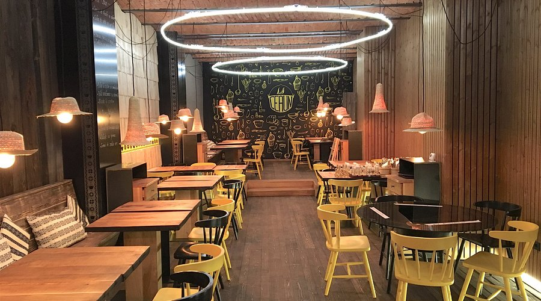
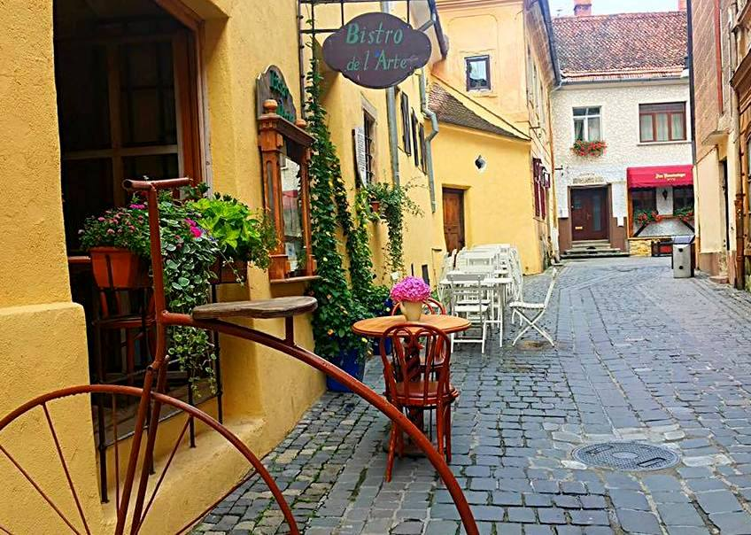
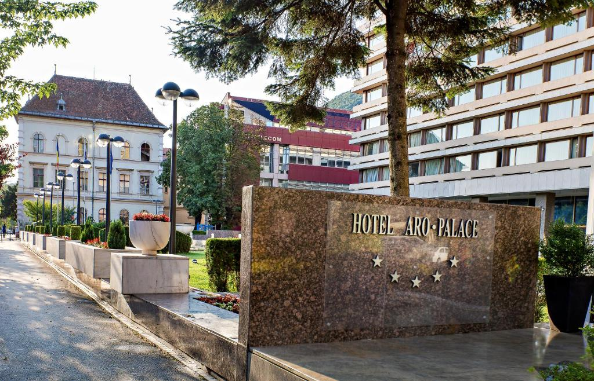

Where to Eat & Stay

Restaurant La Ceaun
A beloved spot offering traditional Romanian food with a modern twist in a rustic setting.

Bistro de l'Arte
An artsy bistro serving European cuisine, perfect for a relaxed evening in the old town.

Hotel Aro Palace
A 5-star hotel with elegant rooms, a spa, and stunning views of Mount Tâmpa and Council Square.

Casa Wagner
A charming guesthouse located in the heart of Brașov’s historical center, great for couples and families.